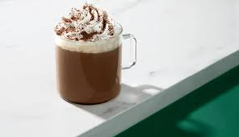
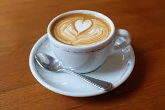

Caffè americano, also known as americano or American, is a type of coffee drink prepared by diluting an espresso shot with hot water at a 1:3 to 1:4 ratio, resulting in a drink that retains the complex flavors of espresso, but in a lighter way.

A caffè mocha, also called mocaccino, is a chocolate-flavoured warm beverage that is a variant of a caffè latte, commonly served in a glass rather than a mug. Other commonly used spellings are mochaccino and also mochachino.

Cappuccino is an espresso-based coffee drink that is traditionally prepared with steamed milk including a layer of milk foam. Variations of the drink involve the use of cream instead of milk, using non-dairy milk substitutes and flavoring with cinnamon or cocoa powder

Espresso is a coffee-brewing method in which a small amount of nearly boiling water is forced under pressure through finely ground coffee beans. Originating from Italy, the French also made significant contributions via the invention of coffee makers, predecessors of today's espresso machines.
Caffè latte, often shortened to just latte in English, is a coffee drink of Italian origin made with espresso and steamed milk, traditionally served in a glass.